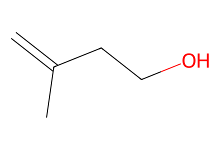
C=C(C)CCOAll drawn SI preparations from 3-methylbut-3-en-1-ol, cyclopentenone 5 and literature sulfoxide 6, including the 6-epi branch and oxidation/reduction recycling to jaeschkeanadiol. The mentioned undrawn protonation byproduct is excluded from structure-resolved routes. Main source unavailable locally. Sulfoxides use charge-separated S+/O- graphs for source wedge assignment. Facts compiled deterministically; independent review pending.
完整 JSON · 逐步 CSV · 路线序列 · SDF · HRMS 核对
| 事件 | 分子连接 | 报告产率 | Canonical reaction SMILES |
|---|---|---|---|
| E01 | alcohol → 7 | 7: 100% | C=C(C)CCO>>C=C(C)CC=O |
| E02 | 6 + 5 + 7 → 8 + 8p | 8: 29%; 8p: 28% | C=C(C)CC=O.C=CC[S@@+]([O-])c1ccc(C)cc1.CC1=CC(=O)CC1>>C=C(C)C[C@@H](O)[C@H]1C(=O)CC[C@]1(C)C/C=C/[S@+]([O-])c1ccc(C)cc1.C=C(C)C[C@H](O)[C@H]1C(=O)CC[C@]1(C)C/C=C/[S@+]([O-])c1ccc(C)cc1 |
| E03 | 8 → 9 | 9: 92% | C=C(C)C[C@H](O)[C@H]1C(=O)CC[C@]1(C)C/C=C/[S@+]([O-])c1ccc(C)cc1>>C=C(C)C[C@H](O[Si](C)(C)C(C)(C)C)[C@H]1C(=O)CC[C@]1(C)C/C=C/[S@+]([O-])c1ccc(C)cc1 |
| E04 | 9 → 10 | 10: 100% | C=C(C)C[C@H](O[Si](C)(C)C(C)(C)C)[C@H]1C(=O)CC[C@]1(C)C/C=C/[S@+]([O-])c1ccc(C)cc1>>C=C(C)C[C@H](O[Si](C)(C)C(C)(C)C)[C@H]1C(=O)CC[C@]1(C)C/C=C/S(=O)(=O)c1ccc(C)cc1 |
| E05 | 10 → 4 | 4: 95% | C=C(C)C[C@H](O[Si](C)(C)C(C)(C)C)[C@H]1C(=O)CC[C@]1(C)C/C=C/S(=O)(=O)c1ccc(C)cc1>>C=CC[C@@]1(C)CCC(=O)[C@@H]1[C@H](CC(=C)C)O[Si](C)(C)C(C)(C)C |
| E06 | 4 → 3 | 3: 97% | C=CC[C@@]1(C)CCC(=O)[C@@H]1[C@H](CC(=C)C)O[Si](C)(C)C(C)(C)C>>CC1=CC[C@@]2(C)CCC(=O)[C@@H]2[C@@H](O[Si](C)(C)C(C)(C)C)C1 |
| E07 | 3 + iPrLi → 11 | 11: 95% | CC1=CC[C@@]2(C)CCC(=O)[C@@H]2[C@@H](O[Si](C)(C)C(C)(C)C)C1.[Li][CH](C)C>>CC1=CC[C@@]2(C)CC[C@@](O)(C(C)C)[C@@H]2[C@@H](O[Si](C)(C)C(C)(C)C)C1 |
| E08 | 11 → 2 | 2: 98% | CC1=CC[C@@]2(C)CC[C@@](O)(C(C)C)[C@@H]2[C@@H](O[Si](C)(C)C(C)(C)C)C1>>CC1=CC[C@@]2(C)CC[C@@](O)(C(C)C)[C@@H]2[C@@H](O)C1 |
| E09 | 8p → 9p | 9p: 88% | C=C(C)C[C@@H](O)[C@H]1C(=O)CC[C@]1(C)C/C=C/[S@+]([O-])c1ccc(C)cc1>>C=C(C)C[C@@H](O[Si](C)(C)C(C)(C)C)[C@H]1C(=O)CC[C@]1(C)C/C=C/[S@+]([O-])c1ccc(C)cc1 |
| E10 | 9p → 10p | 10p: 100% | C=C(C)C[C@@H](O[Si](C)(C)C(C)(C)C)[C@H]1C(=O)CC[C@]1(C)C/C=C/[S@+]([O-])c1ccc(C)cc1>>C=C(C)C[C@@H](O[Si](C)(C)C(C)(C)C)[C@H]1C(=O)CC[C@]1(C)C/C=C/S(=O)(=O)c1ccc(C)cc1 |
| E11 | 10p → 4p | 4p: 93% | C=C(C)C[C@@H](O[Si](C)(C)C(C)(C)C)[C@H]1C(=O)CC[C@]1(C)C/C=C/S(=O)(=O)c1ccc(C)cc1>>C=CC[C@@]1(C)CCC(=O)[C@@H]1[C@@H](CC(=C)C)O[Si](C)(C)C(C)(C)C |
| E12 | 4p → 3p | 3p: 93% | C=CC[C@@]1(C)CCC(=O)[C@@H]1[C@@H](CC(=C)C)O[Si](C)(C)C(C)(C)C>>CC1=CC[C@@]2(C)CCC(=O)[C@@H]2[C@H](O[Si](C)(C)C(C)(C)C)C1 |
| E13 | 3p + iPrLi → 11p | 11p: 80% | CC1=CC[C@@]2(C)CCC(=O)[C@@H]2[C@H](O[Si](C)(C)C(C)(C)C)C1.[Li][CH](C)C>>CC1=CC[C@@]2(C)CC[C@@](O)(C(C)C)[C@@H]2[C@H](O[Si](C)(C)C(C)(C)C)C1 |
| E14 | 11p → 2p | 2p: 95% | CC1=CC[C@@]2(C)CC[C@@](O)(C(C)C)[C@@H]2[C@H](O[Si](C)(C)C(C)(C)C)C1>>CC1=CC[C@@]2(C)CC[C@@](O)(C(C)C)[C@@H]2[C@H](O)C1 |
| E15 | 2p → 12 | 12: 94% | CC1=CC[C@@]2(C)CC[C@@](O)(C(C)C)[C@@H]2[C@H](O)C1>>CC1=CC[C@@]2(C)CC[C@@](O)(C(C)C)[C@@H]2C(=O)C1 |
| E16 | 12 → 2 | 2: 65% | CC1=CC[C@@]2(C)CC[C@@](O)(C(C)C)[C@@H]2C(=O)C1>>CC1=CC[C@@]2(C)CC[C@@](O)(C(C)C)[C@@H]2[C@@H](O)C1 |
| E17 | 2 + 14 → 15 | 15: 94% | CC(C)(C)[Si](C)(C)Oc1ccc(C(=O)Cl)cc1.CC1=CC[C@@]2(C)CC[C@@](O)(C(C)C)[C@@H]2[C@@H](O)C1>>CC1=CC[C@@]2(C)CC[C@@](O)(C(C)C)[C@@H]2[C@@H](OC(=O)c2ccc(O[Si](C)(C)C(C)(C)C)cc2)C1 |
| E18 | 15 → 1 | 1: 100% | CC1=CC[C@@]2(C)CC[C@@](O)(C(C)C)[C@@H]2[C@@H](OC(=O)c2ccc(O[Si](C)(C)C(C)(C)C)cc2)C1>>CC1=CC[C@@]2(C)CC[C@@](O)(C(C)C)[C@@H]2[C@@H](OC(=O)c2ccc(O)cc2)C1 |

C=C(C)CCO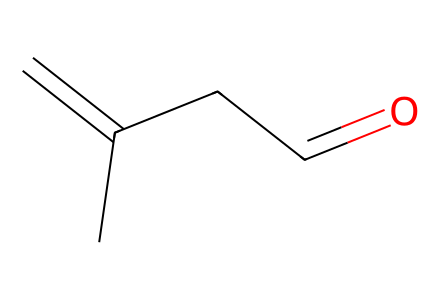
C=C(C)CC=O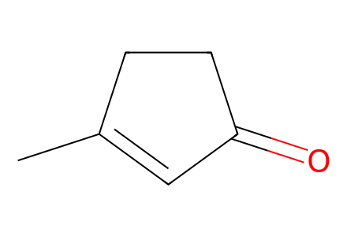
CC1=CC(=O)CC1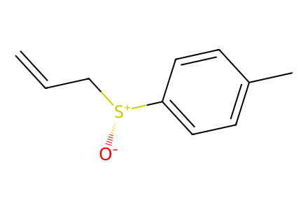
C=CC[S@@+]([O-])c1ccc(C)cc1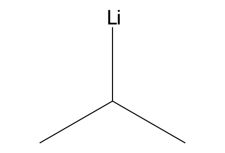
[Li][CH](C)C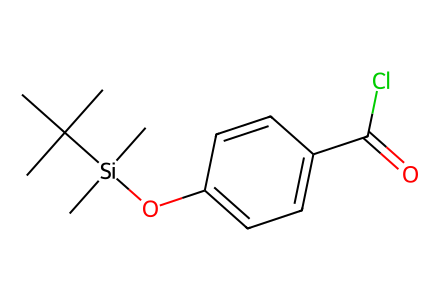
CC(C)(C)[Si](C)(C)Oc1ccc(C(=O)Cl)cc1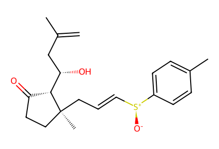
C=C(C)C[C@H](O)[C@H]1C(=O)CC[C@]1(C)C/C=C/[S@+]([O-])c1ccc(C)cc1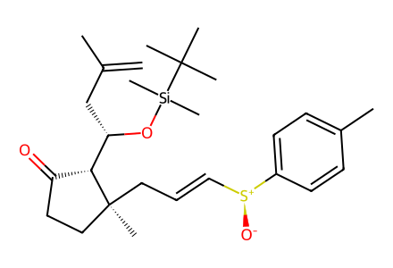
C=C(C)C[C@H](O[Si](C)(C)C(C)(C)C)[C@H]1C(=O)CC[C@]1(C)C/C=C/[S@+]([O-])c1ccc(C)cc1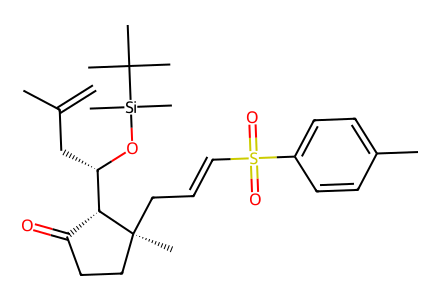
C=C(C)C[C@H](O[Si](C)(C)C(C)(C)C)[C@H]1C(=O)CC[C@]1(C)C/C=C/S(=O)(=O)c1ccc(C)cc1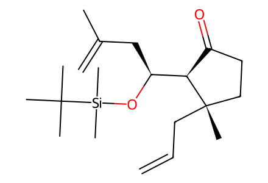
C=CC[C@@]1(C)CCC(=O)[C@@H]1[C@H](CC(=C)C)O[Si](C)(C)C(C)(C)C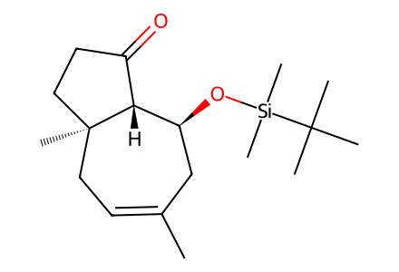
CC1=CC[C@@]2(C)CCC(=O)[C@@H]2[C@@H](O[Si](C)(C)C(C)(C)C)C1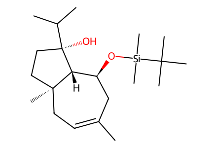
CC1=CC[C@@]2(C)CC[C@@](O)(C(C)C)[C@@H]2[C@@H](O[Si](C)(C)C(C)(C)C)C1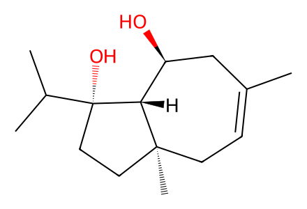
CC1=CC[C@@]2(C)CC[C@@](O)(C(C)C)[C@@H]2[C@@H](O)C1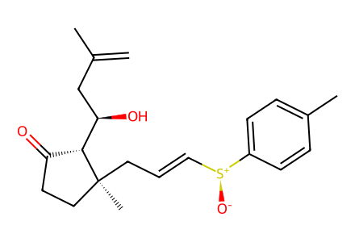
C=C(C)C[C@@H](O)[C@H]1C(=O)CC[C@]1(C)C/C=C/[S@+]([O-])c1ccc(C)cc1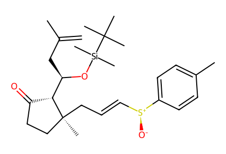
C=C(C)C[C@@H](O[Si](C)(C)C(C)(C)C)[C@H]1C(=O)CC[C@]1(C)C/C=C/[S@+]([O-])c1ccc(C)cc1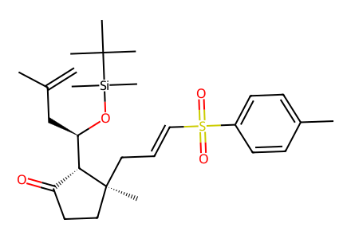
C=C(C)C[C@@H](O[Si](C)(C)C(C)(C)C)[C@H]1C(=O)CC[C@]1(C)C/C=C/S(=O)(=O)c1ccc(C)cc1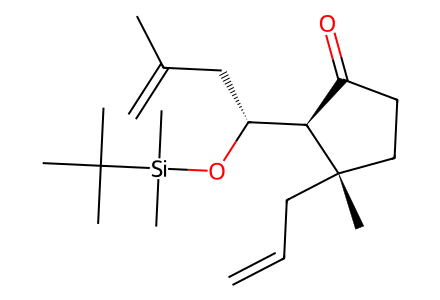
C=CC[C@@]1(C)CCC(=O)[C@@H]1[C@@H](CC(=C)C)O[Si](C)(C)C(C)(C)C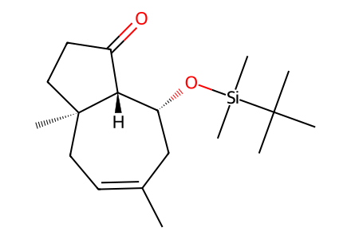
CC1=CC[C@@]2(C)CCC(=O)[C@@H]2[C@H](O[Si](C)(C)C(C)(C)C)C1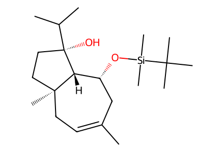
CC1=CC[C@@]2(C)CC[C@@](O)(C(C)C)[C@@H]2[C@H](O[Si](C)(C)C(C)(C)C)C1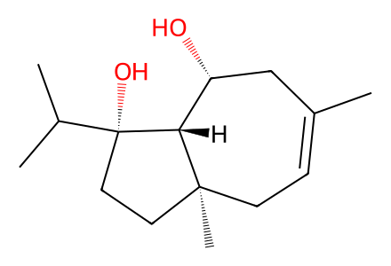
CC1=CC[C@@]2(C)CC[C@@](O)(C(C)C)[C@@H]2[C@H](O)C1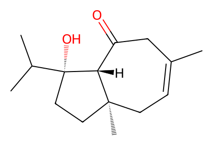
CC1=CC[C@@]2(C)CC[C@@](O)(C(C)C)[C@@H]2C(=O)C1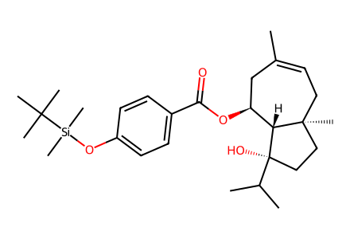
CC1=CC[C@@]2(C)CC[C@@](O)(C(C)C)[C@@H]2[C@@H](OC(=O)c2ccc(O[Si](C)(C)C(C)(C)C)cc2)C1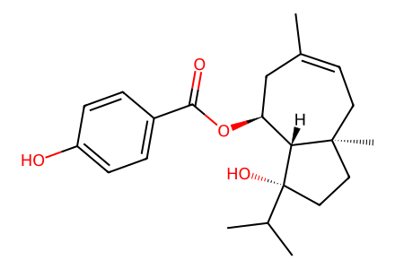
CC1=CC[C@@]2(C)CC[C@@](O)(C(C)C)[C@@H]2[C@@H](OC(=O)c2ccc(O)cc2)C1